2025 Higher Mathematics - Paper 1 marking instructions
Source: Scottish Qualifications Authority (SQA) / Qualifications Scotland. This is a StemInteract HTML companion, not an official HTML edition. Selectable text is supplied alongside original page images. Use the images or original PDF for equations, powers, fractions, vector notation, tables and diagrams; text extraction cannot fully preserve mathematical layout.
Jump to a question
PDF page 1
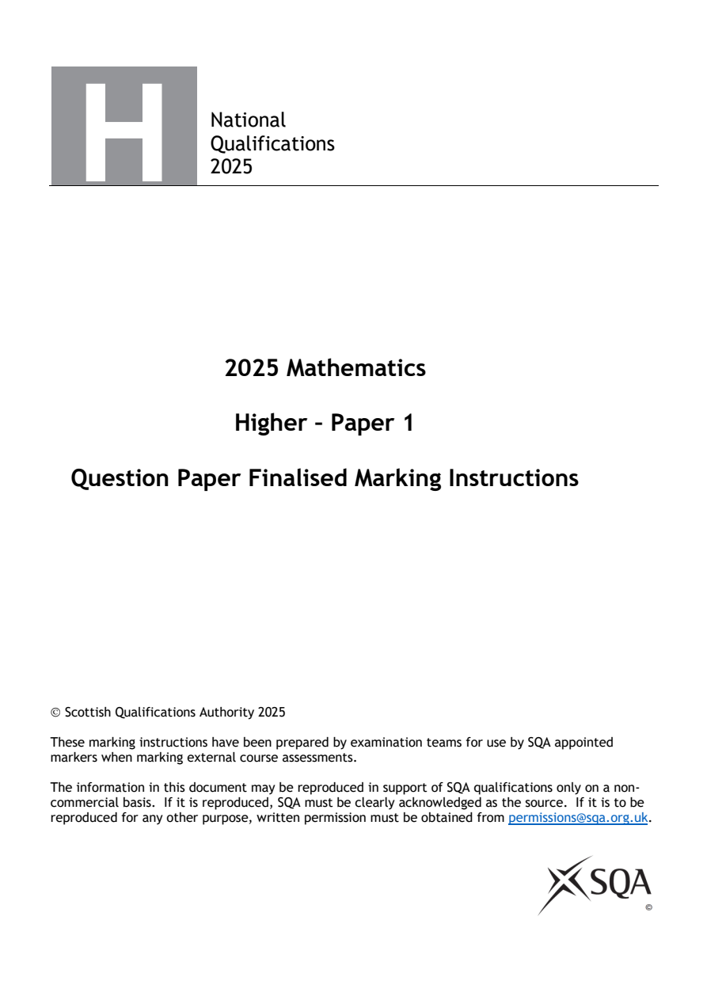
Selectable page text
National
Qualifications
2025
2025 Mathematics
Higher – Paper 1
Question Paper Finalised Marking Instructions
© Scottish Qualifications Authority 2025
These marking instructions have been prepared by examination teams for use by SQA appointed
markers when marking external course assessments.
The information in this document may be reproduced in support of SQA qualifications only on a non-
commercial basis. If it is reproduced, SQA must be clearly acknowledged as the source. If it is to be
reproduced for any other purpose, written permission must be obtained from permissions@sqa.org.uk.PDF page 2
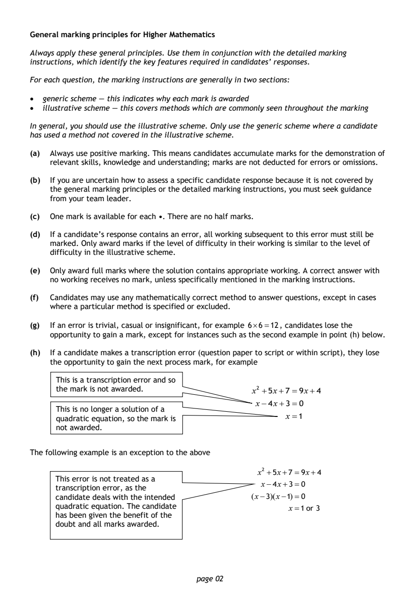
Selectable page text
General marking principles for Higher Mathematics
Always apply these general principles. Use them in conjunction with the detailed marking
instructions, which identify the key features required in candidates’ responses.
For each question, the marking instructions are generally in two sections:
• generic scheme — this indicates why each mark is awarded
• illustrative scheme — this covers methods which are commonly seen throughout the marking
In general, you should use the illustrative scheme. Only use the generic scheme where a candidate
has used a method not covered in the illustrative scheme.
(a) Always use positive marking. This means candidates accumulate marks for the demonstration of
relevant skills, knowledge and understanding; marks are not deducted for errors or omissions.
(b) If you are uncertain how to assess a specific candidate response because it is not covered by
the general marking principles or the detailed marking instructions, you must seek guidance
from your team leader.
(c) One mark is available for each •. There are no half marks.
(d) If a candidate’s response contains an error, all working subsequent to this error must still be
marked. Only award marks if the level of difficulty in their working is similar to the level of
difficulty in the illustrative scheme.
(e) Only award full marks where the solution contains appropriate working. A correct answer with
no working receives no mark, unless specifically mentioned in the marking instructions.
(f) Candidates may use any mathematically correct method to answer questions, except in cases
where a particular method is specified or excluded.
(g) If an error is trivial, casual or insignificant, for example 6×6=12, candidates lose the
opportunity to gain a mark, except for instances such as the second example in point (h) below.
(h) If a candidate makes a transcription error (question paper to script or within script), they lose
the opportunity to gain the next process mark, for example
This is a transcription error and so
the mark is not awarded. x² +5x+7 =9x+4
x−4x+3=0
This is no longer a solution of a
x =1
quadratic equation, so the mark is
not a warded.
The following example is an exception to the above
x² +5x+7 =9x+4
This error is not treated as a
x−4x+3=0
transcript ion err or, as the
candidate deals with the intended (x−3)(x−1)=0
quadratic equation. The candidate
x=1 or 3
has been given the benefit of the
doubt and all marks awarded.
page 02PDF page 3
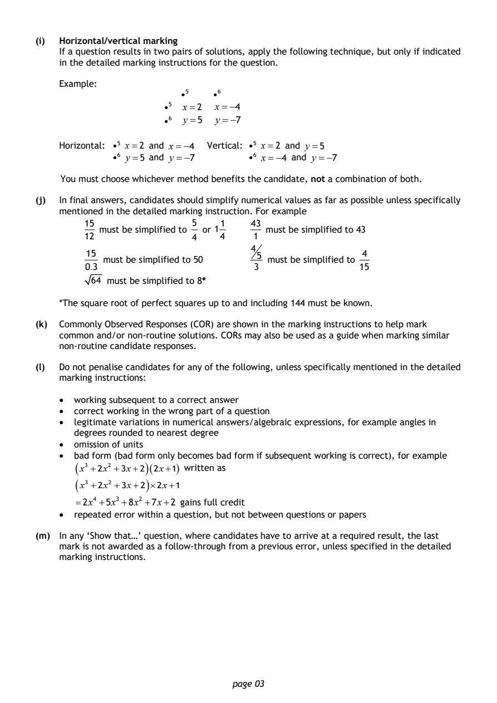
Selectable page text
(i) Horizontal/vertical marking
If a question results in two pairs of solutions, apply the following technique, but only if indicated
in the detailed marking instructions for the question.
Example:
•5 •6
•5 x =2 x=−4
•6 y=5 y=−7
Horizontal: •5 x =2 and x=−4 Vertical: •⁵ x =2 and y=5
•6 y=5 and y=−7 •6 x=−4 and y=−7
You must choose whichever method benefits the candidate, not a combination of both.
(j) In final answers, candidates should simplify numerical values as far as possible unless specifically
mentioned in the detailed marking instruction. For example
15 5 1 43
must be simplified to or 1 must be simplified to 43
12 4 4 1
4
15 5 4
must be simplified to 50 must be simplified to
0.3 3 15
64 must be simplified to 8*
*The square root of perfect squares up to and including 144 must be known.
(k) Commonly Observed Responses (COR) are shown in the marking instructions to help mark
common and/or non-routine solutions. CORs may also be used as a guide when marking similar
non-routine candidate responses.
(l) Do not penalise candidates for any of the following, unless specifically mentioned in the detailed
marking instructions:
• working subsequent to a correct answer
• correct working in the wrong part of a question
• legitimate variations in numerical answers/algebraic expressions, for example angles in
degrees rounded to nearest degree
• omission of units
• bad form (bad form only becomes bad form if subsequent working is correct), for example
( x³ +2x² +3x+2 )(2x+1) written as
(
x³ +2x² +3x+2
)
×2x+1
=2x⁴ +5x³ +8x² +7x+2 gains full credit
• repeated error within a question, but not between questions or papers
(m) In any ‘Show that…’ question, where candidates have to arrive at a required result, the last
mark is not awarded as a follow-through from a previous error, unless specified in the detailed
marking instructions.
page 03PDF page 4
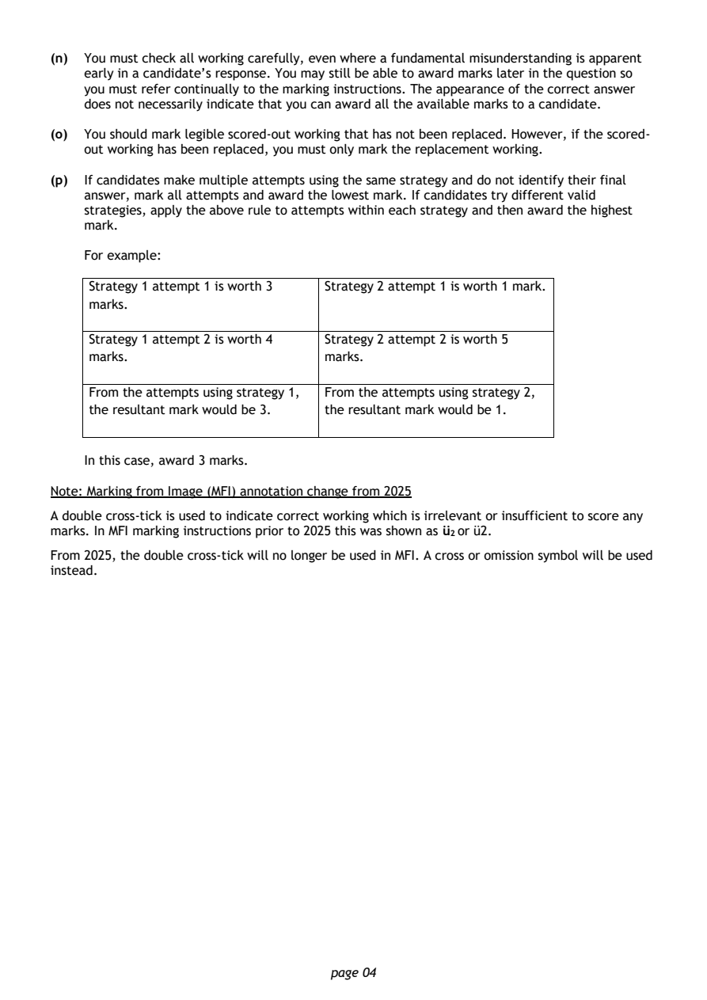
Selectable page text
(n) You must check all working carefully, even where a fundamental misunderstanding is apparent
early in a candidate’s response. You may still be able to award marks later in the question so
you must refer continually to the marking instructions. The appearance of the correct answer
does not necessarily indicate that you can award all the available marks to a candidate.
(o) You should mark legible scored-out working that has not been replaced. However, if the scored-
out working has been replaced, you must only mark the replacement working.
(p) If candidates make multiple attempts using the same strategy and do not identify their final
answer, mark all attempts and award the lowest mark. If candidates try different valid
strategies, apply the above rule to attempts within each strategy and then award the highest
mark.
For example:
Strategy 1 attempt 1 is worth 3 Strategy 2 attempt 1 is worth 1 mark.
marks.
Strategy 1 attempt 2 is worth 4 Strategy 2 attempt 2 is worth 5
marks. marks.
From the attempts using strategy 1, From the attempts using strategy 2,
the resultant mark would be 3. the resultant mark would be 1.
In this case, award 3 marks.
Note: Marking from Image (MFI) annotation change from 2025
A double cross-tick is used to indicate correct working which is irrelevant or insufficient to score any
marks. In MFI marking instructions prior to 2025 this was shown as ü or ü2.
2
From 2025, the double cross-tick will no longer be used in MFI. A cross or omission symbol will be used
instead.
page 04PDF page 5
Paper 1, Question 1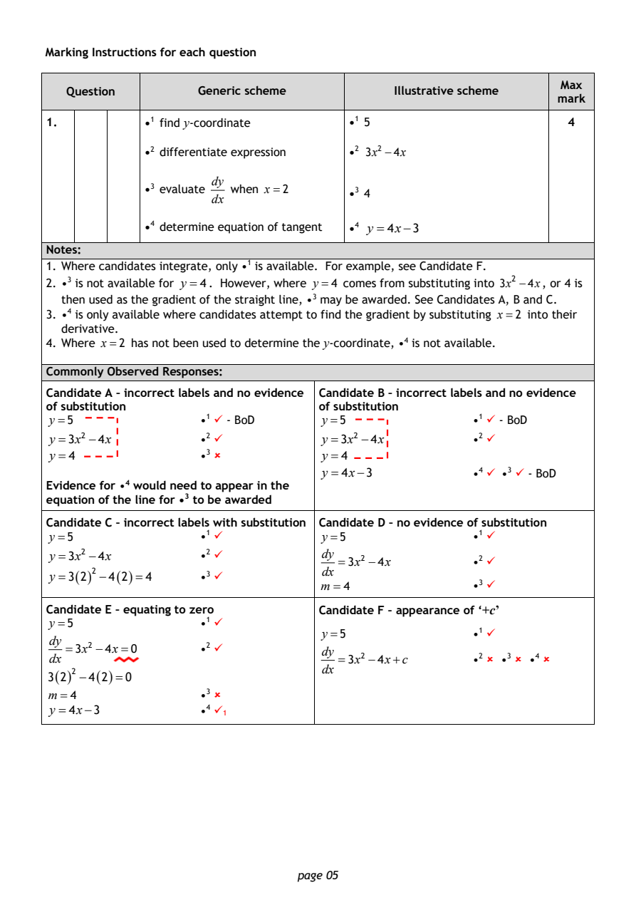
Selectable page text
Marking Instructions for each question
Max
Question Generic scheme Illustrative scheme
mark
1. •1 find y-coordinate •1 5 4
•2 differentiate expression •2 3x² −4x
dy
•3 evaluate when x=2 •3 4
dx
•4 determine equation of tangent •4 y =4x−3
Notes:
1. Where candidates integrate, only •¹ is available. For example, see Candidate F.
2. •³ is not available for y=4. However, where y=4 comes from substituting into 3x² −4x, or 4 is
then used as the gradient of the straight line, •³ may be awarded. See Candidates A, B and C.
3. •⁴ is only available where candidates attempt to find the gradient by substituting x=2 into their
derivative.
4. Where x=2 has not been used to determine the y-coordinate, •⁴ is not available.
Commonly Observed Responses:
Candidate A – incorrect labels and no evidence Candidate B – incorrect labels and no evidence
of substitution of substitution
y=5 •1 ✓ - BoD y=5 •1 ✓ - BoD
y=3x² −4x •2 ✓ y=3x² −4x •2 ✓
y=4 •3 y=4
y =4x−3 •4 ✓ •3 ✓ - BoD
Evidence for •⁴ would need to appear in the
equation of the line for •³ to be awarded
Candidate C – incorrect labels₁ with substitution Candidate D – no evidence of ₁substitution
y=5 • ✓ y=5 • ✓
y=3x² −4x •2 ✓ dy
=3x² −4x •2 ✓
y =3(2)² −4(2)=4 •3 ✓ dx
m=4 •3 ✓
Candidate E – equating to zer₁o Candidate F – appearance of ‘+c’
y=5 • ✓
y=5 •1 ✓
dy
=3x² −4x=0 •2 ✓ dy
dx =3x² −4x+c •2 •3 •4
dx
3(2)² −4(2)=0
m=4 •3
y =4x−3 •4 ✓
1
page 05PDF page 6
Paper 1, Question 2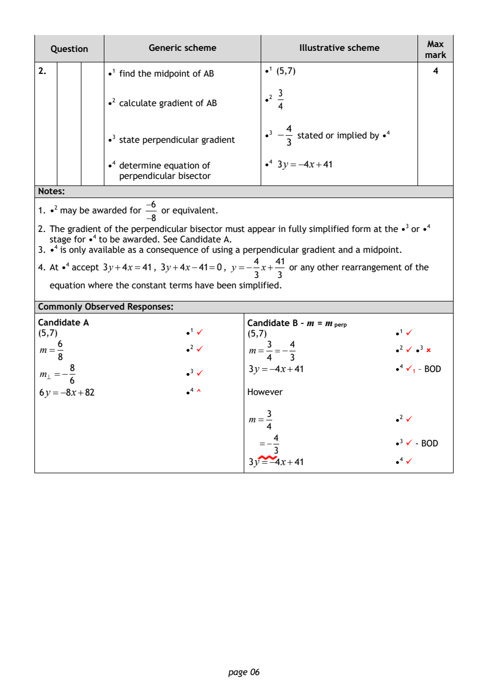
Selectable page text
Max
Question Generic scheme Illustrative scheme
mark
2. •1 find the midpoint of AB •1 (5,7) 4
3
•2 calculate gradient of AB
•2
4
4
•3 − stated or implied by •⁴
•3 state perpendicular gradient 3
•4 determine equation of •4 3y=−4x+41
perpendicular bisector
Notes:
−6
1. •² may be awarded for or equivalent.
−8
2. The gradient of the perpendicular bisector must appear in fully simplified form at the •³ or •⁴
st₄age for •⁴ to be awarded. See Candidate A.
3. • is only available as a consequence of using a perpendicular gradient and a midpoint.
4 41
4. At •⁴ accept 3y+4x=41 , 3y+4x−41=0, y =− x+ or any other rearrangement of the
3 3
equation where the constant terms have been simplified.
Commonly Observed Responses:
Candidate A Candidate B – m = m
perp
(5,7) •1 ✓ (5,7) •1 ✓
6 3 4
m= •2 ✓ m= =− •2 ✓ •3
8 4 3
8 3y=−4x+41 •4 ✓ – BOD
m_{⊥} =− •3 ✓ 1
6
6y =−8x+82 •4 ^ However
3
m= •2 ✓
4
4
=− •3 ✓ - BOD
3
3y=−4x+41 •4 ✓
page 06PDF page 7
Paper 1, Question 3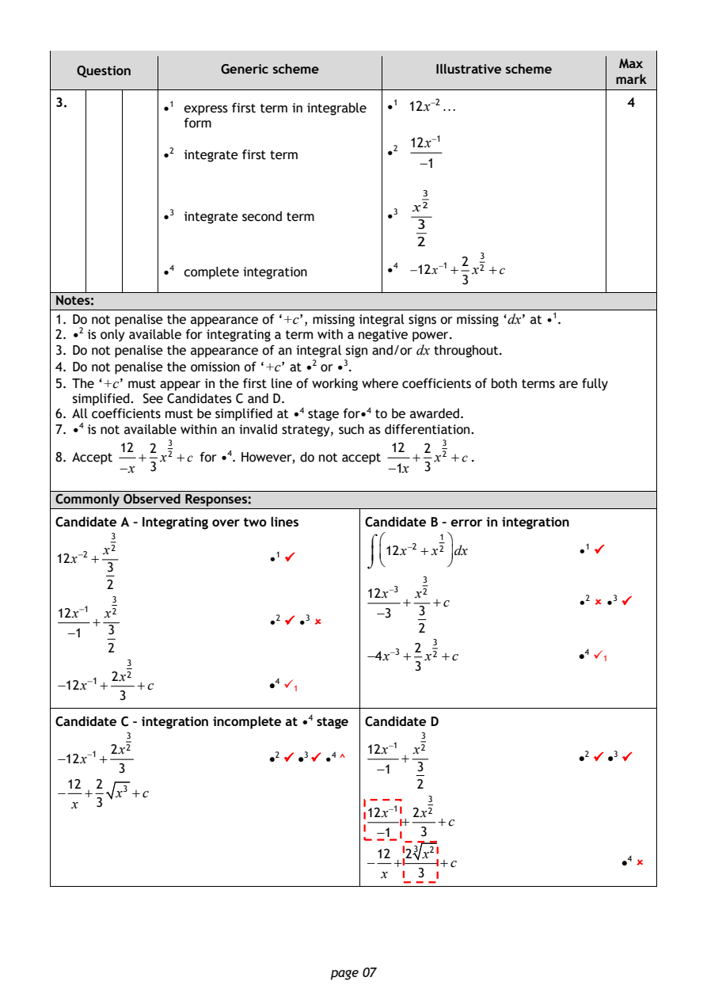
Selectable page text
Max
Question Generic scheme Illustrative scheme
mark
3. •1 express first term in integrable •1 12x⁻² 4
form
12x⁻¹
•2 integrate first term •2
−1
x²³
•3 integrate second term •3
3
2
2
•4 complete integration •4 −12x⁻¹+ x²³ +c
3
Notes:
1. D₂o not penalise the appearance of ‘+c’, missing integral signs or missing ‘dx’ at •¹.
2. • is only available for integrating a term with a negative power.
3. Do not penalise the appearance of an integral sign and/or dx throughout.
4. Do not penalise the omission of ‘+c’ at •² or •³.
5. The ‘+c’ must appear in the first line of working where coefficients of both terms are fully
simplified. See Candidates C and D.
6. A₄ll coefficients must be simplified at •⁴ stage for•⁴ to be awarded.
7. • is not available within an invalid strategy, such as differentiation.
12 2 12 2
8. Accept + x³² +c for •⁴. However, do not accept + x³² +c.
−x 3 −1x 3
Commonly Observed Responses:
Candidate A – Integrating over two lines Candidate B – error in integration
⌠
12x⁻² + x²³ •1 ✓ ⌡ 12x⁻² +x²¹ dx •1 ✓
3
2
12x⁻³ x²³
+ +c •2 •3 ✓
12x⁻¹ x²³ −3 3
+ •2 ✓ •3
−1 3 2
2 2
−4x⁻³ + x²³ +c •4 ✓
1
3
2x²³
−12x⁻¹+ +c •4 ✓
1
3
Candidate C – integration incomplete at •⁴ stage Candidate D
2x²³ 12x⁻¹ x²³
−12x⁻¹+ •2 ✓ •3 ✓ •4 ^ + •2 ✓ •3 ✓
3 −1 3
12 2 2
− + x³ +c
x 3
12x⁻¹ 2x²³
+ +c
−1 3
12 2³ x²
− + +c •4
x 3
page 07PDF page 8
Paper 1, Question 4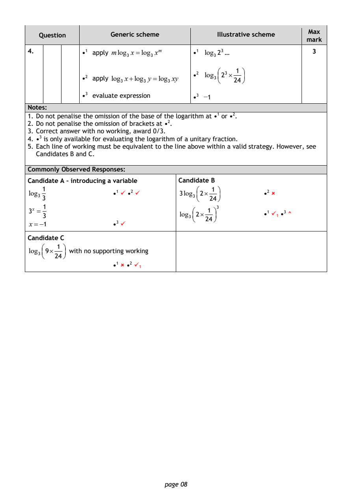
Selectable page text
Max
Question Generic scheme Illustrative scheme
mark
4. •1 apply mlog₃ x=log₃ x^{m} •1 log₃2³… 3
1
•2 apply log₃ x+log₃ y=log₃ xy •2 log₃ 2³× 24
•3 evaluate expression •3 −1
Notes:
1. Do not penalise the omission of the base of the logarithm at •¹ or •².
2. Do not penalise the omission of brackets at •².
3. C₃orrect answer with no working, award 0/3.
4. • is only available for evaluating the logarithm of a unitary fraction.
5. Each line of working must be equivalent to the line above within a valid strategy. However, see
Candidates B and C.
Commonly Observed Responses:
Candidate A – introducing a variable Candidate B
1 1
log₃ •1 ✓ •2 ✓ 3log₃2× •2
3 24
1
3^{x} = 1 ³
3 log₃2× •1 ✓ 1 •3 ^
24
x=−1 •3 ✓
Candidate C
1
log₃9× with no supporting working
24
•1 •2 ✓
1
page 08PDF page 9
Paper 1, Question 5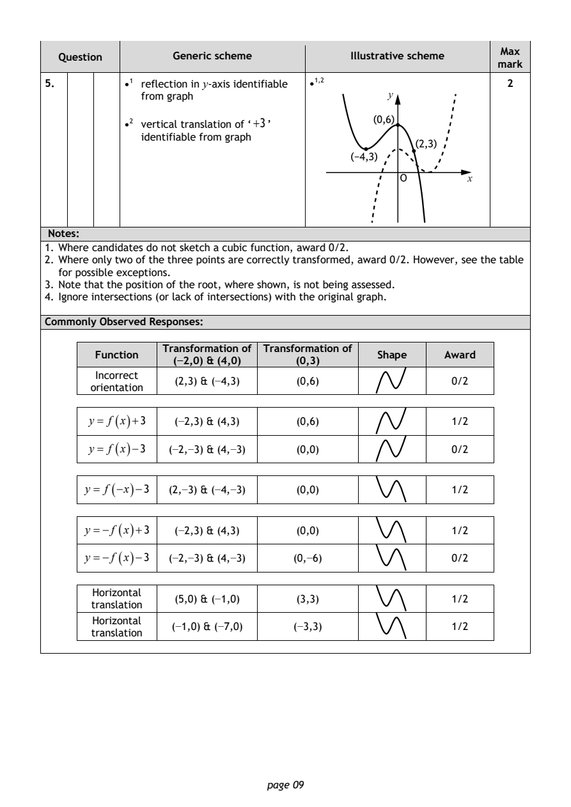
Selectable page text
Max
Question Generic scheme Illustrative scheme
mark
5. •1 reflection in y-axis identifiable •1,2 2
from graph
•2 vertical translation of ‘+3’
identifiable from graph
Notes:
1. Where candidates do not sketch a cubic function, award 0/2.
2. Where only two of the three points are correctly transformed, award 0/2. However, see the table
for possible exceptions.
3. Note that the position of the root, where shown, is not being assessed.
4. Ignore intersections (or lack of intersections) with the original graph.
Commonly Observed Responses:
Transformation of Transformation of
Function Shape Award
(−2,0) & (4,0) (0,3)
Incorrect
(2,3) & (−4,3) (0,6) 0/2
orientation
y = f (x)+3 (−2,3) & (4,3) (0,6) 1/2
y = f (x)−3 (−2,−3) & (4,−3) (0,0) 0/2
y = f (−x)−3 (2,−3) & (−4,−3) (0,0) 1/2
y =−f (x)+3 (−2,3) & (4,3) (0,0) 1/2
y =−f (x)−3 (−2,−3) & (4,−3) (0,−6) 0/2
Horizontal
(5,0) & (−1,0) (3,3) 1/2
translation
Horizontal
(−1,0) & (−7,0) (−3,3) 1/2
translation
page 09PDF page 10
Paper 1, Question 6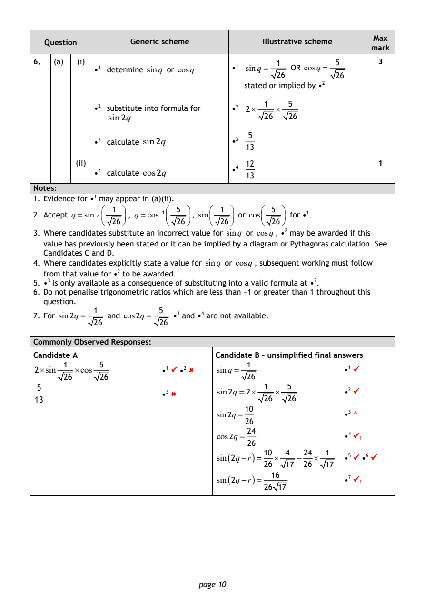
Selectable page text
Max
Question Generic scheme Illustrative scheme
mark
6. (a) (i) 1 5 3
•1 determine sinq or cosq •1 sinq= OR cosq=
26 26
stated or implied by •²
1 5
•2 substitute into formula for •2 2× ×
sin2q 26 26
5
•3 calculate sin2q •3
13
(ii) 12 1
•4
•4 calculate cos2q
13
Notes:
1. Evidence for •¹ may appear in (a)(ii).
1 5 1 5
2. Accept q =sin , q =cos⁻¹ , sin or cos for •¹.
26 26 26 26
3. Where candidates substitute an incorrect value for sinq or cosq, •² may be awarded if this
value has previously been stated or it can be implied by a diagram or Pythagoras calculation. See
Candidates C and D.
4. Where candidates explicitly state a value for sinq or cosq, subsequent working must follow
fr₃om that value for •² to be awarded.
5. • is only available as a consequence of substituting into a valid formula at •².
6. Do not penalise trigonometric ratios which are less than −1 or greater than 1 throughout this
question.
1 5
7. For sin2q= and cos2q= •3 and •⁴ are not available.
26 26
Commonly Observed Responses:
Candidate A Candidate B – unsimplified final answers
1 5 1
2×sin ×cos •1 ✓ •2 sinq= •1 ✓
26 26 26
5 1 5
•3 sin2q=2× × •2 ✓
13 26 26
10
sin2q= •3 ^
26
24
cos2q= •4 ✓
1
26
10 4 24 1
sin(2q−r)= × − × •5 ✓ •6 ✓
26 17 26 17
16
sin(2q−r)= •7 ✓
1
26 17
page 10PDF page 11
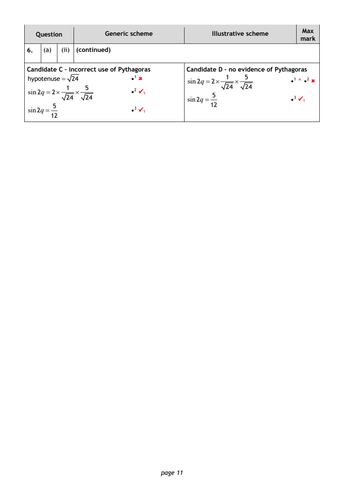
Selectable page text
Max
Question Generic scheme Illustrative scheme
mark
6. (a) (ii) (continued)
Candidate C – incorrect use of Pythagoras Candidate D – no evidence of Pythagoras
hypotenuse= 24 •1 sin2q=2× 1 × 5 •1 ^ •2
1 5 24 24
sin2q=2× × •2 ✓
1 5
24 24 sin2q= •3 ✓
1
5 12
sin2q= •3 ✓
1
12
page 11PDF page 12
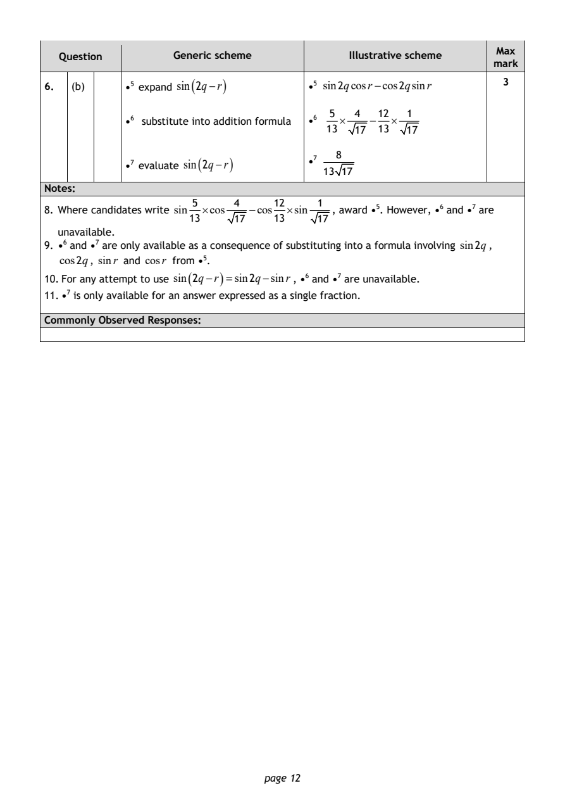
Selectable page text
Max
Question Generic scheme Illustrative scheme
mark
6. (b) •5 expand sin( 2q−r) •5 sin2qcosr−cos2qsinr 3
5 4 12 1
•6 substitute into addition formula •6 × − ×
13 17 13 17
8
•7 evaluate
sin( 2q−r) •7
13 17
Notes:
5 4 12 1
8. Where candidates write sin ×cos −cos ×sin , award •⁵. However, •⁶ and •⁷ are
13 17 13 17
unavailable.
9. •⁶ and •⁷ are only available as a consequence of substituting into a formula involving sin2q,
cos2q, sinr and cosr from •⁵.
10. For any attempt to use sin(2q−r)=sin2q−sinr , •⁶ and •⁷ are unavailable.
11. •⁷ is only available for an answer expressed as a single fraction.
Commonly Observed Responses:
page 12PDF page 13
Paper 1, Question 7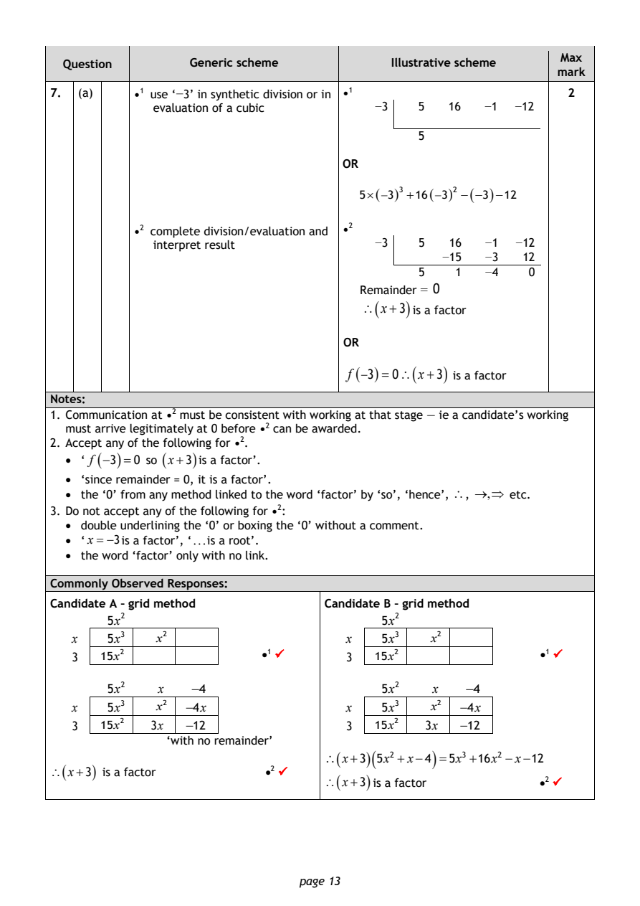
Selectable page text
Max
Question Generic scheme Illustrative scheme
mark
7. (a) •1 use ‘−3’ in synthetic division or in •¹ 2
evaluation of a cubic −3 5 16 −1 −12
5
OR
5×(−3)³ +16(−3)² −(−3)−12
•2 complete division/evaluation and •2
interpret result −3 5 16 −1 −12
−15 −3 12
5 1 −4 0
Remainder = 0
∴(x+3 )
is a factor
OR
f (−3)=0∴(x+3 ) is a factor
Notes:
1. Communication at •² must be consistent with working at that stage — ie a candidate’s working
must arrive legitimately at 0 before •² can be awarded.
2. Accept any of the following for •².
• ‘ f (−3)=0 so (x+3) is a factor’.
• ‘since remainder = 0, it is a factor’.
• the ‘0’ from any method linked to the word ‘factor’ by ‘so’, ‘hence’, ∴, →,⇒ etc.
3. Do not accept any of the following for •²:
• double underlining the ‘0’ or boxing the ‘0’ without a comment.
• ‘x=−3is a factor’, ‘ is a root’.
• the word ‘factor’ only with no link.
Commonly Observed Responses:
Candidate A – grid method Candidate B – grid method
5x² 5x²
x 5x³ x² x 5x³ x²
3 15x² •1 ✓ 3 15x² •1 ✓
5x² x −4 5x² x −4
x 5x³ x² −4x x 5x³ x² −4x
3 15x² 3x −12 3 15x² 3x −12
‘with no remainder’
∴(x+3)(
5x² +x−4
)
=5x³+16x² −x−12
∴(x+3) is a factor •2 ✓
∴(x+3) is a factor •2 ✓
page 13PDF page 14
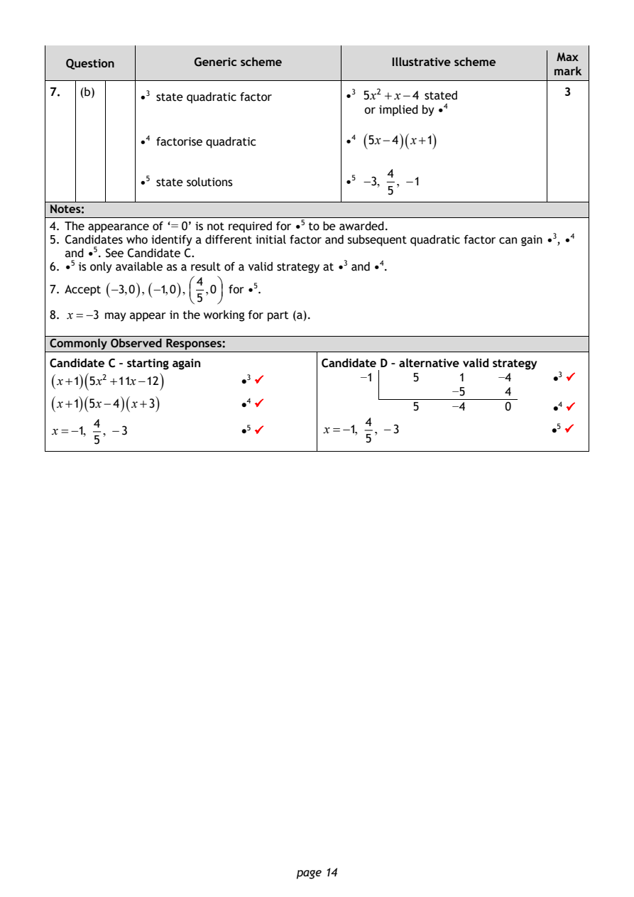
Selectable page text
Max
Question Generic scheme Illustrative scheme
mark
7. (b) •3 state quadratic factor •3 5x² +x−4 stated 3
or implied by •⁴
•4 factorise quadratic •4 (5x−4)(x+1)
4
•5 state solutions •5 −3, , −1
5
Notes:
4. The appearance of ‘= 0’ is not required for •⁵ to be awarded.
5. Candidates who identify a different initial factor and subsequent quadratic factor can gain •³, •4
an₅d •⁵. See Candidate C.
6. • is only available as a result of a valid strategy at •³ and •⁴.
4
7. Accept (−3,0), (−1,0), ,0 for •⁵.
5
8. x=−3 may appear in the working for part (a).
Commonly Observed Responses:
Candidate C – starting again Candidate D – alternative valid strategy
(x+1)( 5x² +11x−12 ) •3 ✓ −1 5 1 −4 •3 ✓
−5 4
(x+1)(5x−4)(x+3) •4 ✓ 5 −4 0 •4 ✓
4 4
x=−1, , −3 •5 ✓ x=−1, , −3 •5 ✓
5 5
page 14PDF page 15
Paper 1, Question 8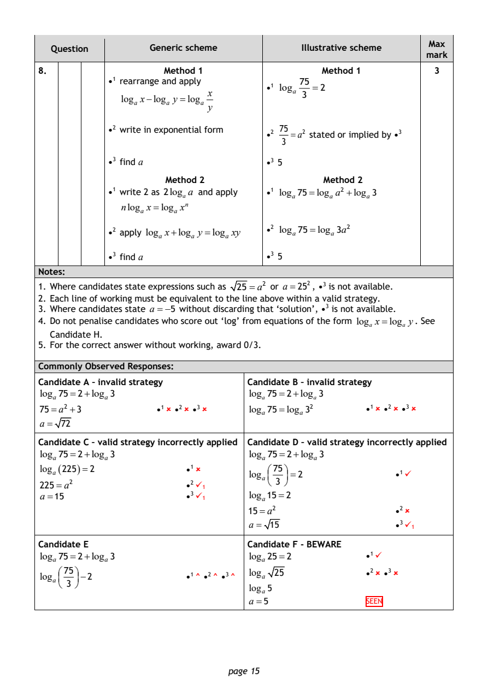
Selectable page text
Max
Question Generic scheme Illustrative scheme
mark
8. Method 1 Method 1 3
•1 rearrange and apply 75
•1 logₐ =2
x 3
logₐ x−logₐ y =logₐ
y
•2 write in exponential form 75
•2 =a² stated or implied by •³
3
•3 find a •3 5
Method 2 Method 2
•1 write 2 as 2logₐa and apply •1 logₐ75=logₐa² +logₐ3
nlogₐ x=logₐ xⁿ
•2 apply logₐ x+logₐ y=logₐ xy •2 logₐ75=logₐ3a²
•3 find a •3 5
Notes:
1. Where candidates state expressions such as 25 =a² or a=25², •3 is not available.
2. Each line of working must be equivalent to the line above within a v₃alid strategy.
3. Where candidates state a =−5 without discarding that ‘solution’, • is not available.
4. Do not penalise candidates who score out ‘log’ from equations of the form logₐ x=logₐ y. See
Candidate H.
5. For the correct answer without working, award 0/3.
Commonly Observed Responses:
Candidate A – invalid strategy Candidate B – invalid strategy
logₐ75=2+logₐ3 logₐ75=2+logₐ3
75=a² +3 •1 •2 •3 logₐ75=logₐ3² •1 •2 •3
a= 72
Candidate C – valid strategy incorrectly applied Candidate D – valid strategy incorrectly applied
logₐ75=2+logₐ3 logₐ75=2+logₐ3
logₐ(225)=2 •1 75
logₐ =2 •1 ✓
225=a² •2 ✓ 3
1
a=15 •3 ✓ logₐ15=2
1
15=a² •2
a = 15 •3 ✓
1
Candidate E Candidate F - BEWARE
logₐ75=2+logₐ3 logₐ25=2 •1 ✓
75 logₐ 25 •2 •3
logₐ −2 •1 ^ •2 ^ •3 ^
3
logₐ5
a=5 SEEN
page 15PDF page 16
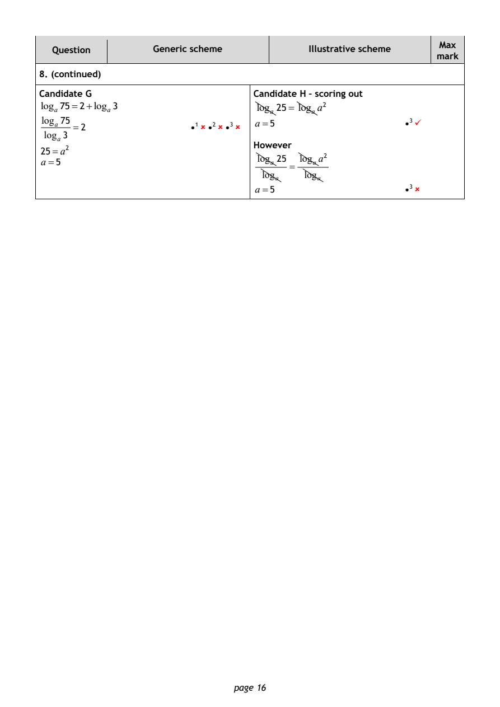
Selectable page text
Max
Question Generic scheme Illustrative scheme
mark
8. (continued)
Candidate G Candidate H – scoring out
logₐ75=2+logₐ3 logₐ 25= logₐa²
logₐ75 a=5 •3 ✓
=2 •1 •2 •3
logₐ3
However
25=a²
logₐ 25 logₐa²
a=5
=
logₐ logₐ
a=5 •3
page 16PDF page 17
Paper 1, Question 9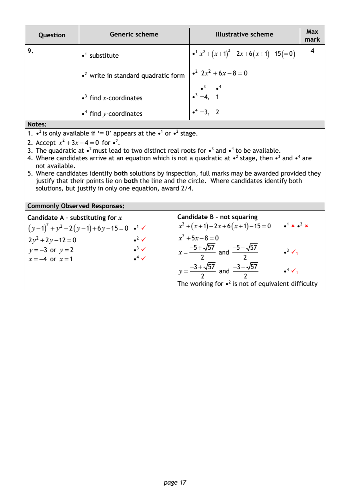
Selectable page text
Max
Question Generic scheme Illustrative scheme
mark
9.
•1 substitute
•1 x²+(x+1)²−2x+6(x+1)−15(=0) 4
•2 write in standard quadratic form •2 2x² +6x−8 =0
•3 •4
•3 find x-coordinates •3 −4, 1
•4 find y-coordinates •4 −3, 2
Notes:
1. •² is only available if ‘= 0’ appears at the •¹ or •² stage.
2. Accept x² +3x−4=0 for •².
3. The quadratic at •² must lead to two distinct real roots for •³ and •⁴ to be available.
4. Where candidates arrive at an equation which is not a quadratic at •² stage, then •³ and •⁴ are
not available.
5. Where candidates identify both solutions by inspection, full marks may be awarded provided they
justify that their points lie on both the line and the circle. Where candidates identify both
solutions, but justify in only one equation, award 2/4.
Commonly Observed Responses:
Candidate A – substituting for x Candidate B – not squaring
(y−1)² + y² −2(y−1)+6y−15=0 •¹ ✓ x² +(x+1)−2x+6(x+1)−15=0 •1 •2
2y² +2y−12=0 •2 ✓
x² +5x−8=0
y =−3 or y =2 •3 ✓ x= −5+ 57 and −5− 57 •3 ✓
1
x=−4 or x=1 •4 ✓ 2 2
−3+ 57 −3− 57
y = and •4 ✓
1
2 2
The working for •² is not of equivalent difficulty
page 17PDF page 18
Paper 1, Question 10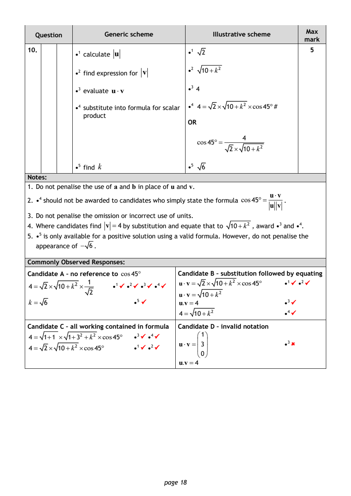
Selectable page text
Max
Question Generic scheme Illustrative scheme
mark
10. •1 calculate u •1 2 5
•2 find expression for v •2 10+k²
•3 evaluate u⋅v •3 4
•4 substitute into formula for scalar •4 4= 2× 10+k² ×cos45°#
product
OR
4
cos45°=
2× 10+k²
•5 find k •5 6
Notes:
1. Do not penalise the use of a and b in place of u and v.
u⋅v
2. •⁴ should not be awarded to candidates who simply state the formula cos45°= .
u v
3. Do not penalise the omission or incorrect use of units.
4. Where candidates find v =4by substitution and equate that to 10+k² , award •³ and •⁴.
5. •⁵ is only available for a positive solution using a valid formula. However, do not penalise the
appearance of − 6.
Commonly Observed Responses:
Candidate A – no reference to cos45° Candidate B – substitution followed by equating
1 u⋅v= 2× 10+k² ×cos45° •1 ✓ •2 ✓
4= 2× 10+k² × •1 ✓ •2 ✓ •3 ✓ •4 ✓
2
u⋅v= 10+k²
k = 6 •5 ✓ u.v=4 •3 ✓
4= 10+k² •4 ✓
Candidate C – all working contained in formula Candidate D – invalid notation
4 = 1+1 × 1+3² +k² ×cos45° •3 ✓ •4 ✓ 1
u⋅v = 3 •3
4= 2× 10+k² ×cos45° •1 ✓ •2 ✓
0
u.v=4
page 18PDF page 19
Paper 1, Question 11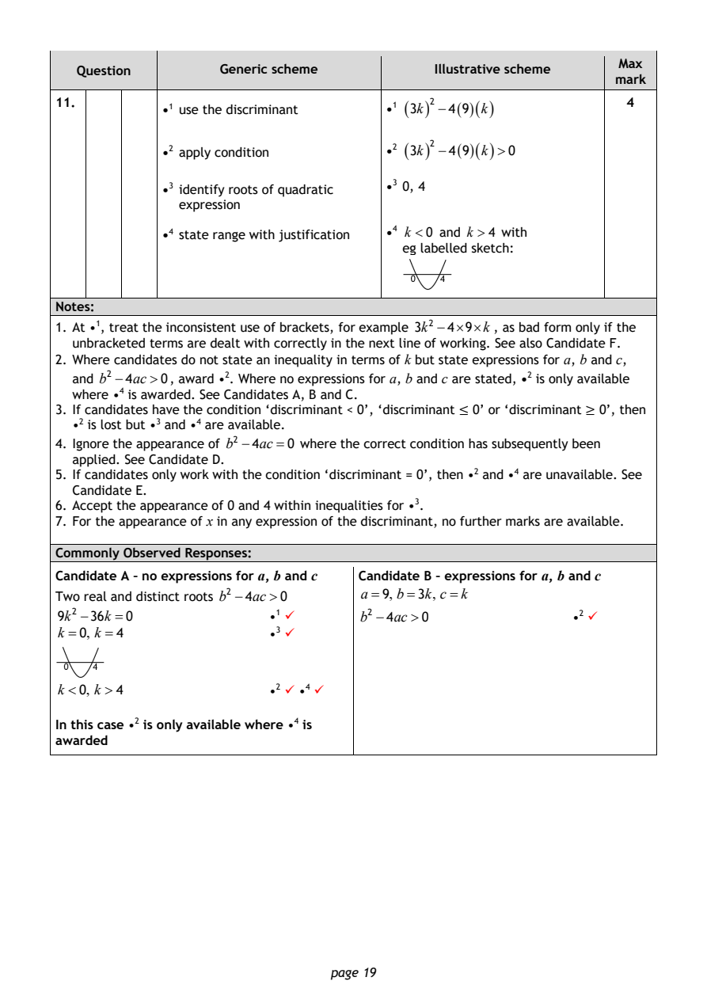
Selectable page text
Max
Question Generic scheme Illustrative scheme
mark
11. •1 use the discriminant •1 (3k)² −4(9)(k) 4
•2 apply condition •2 (3k)² −4(9)(k)>0
•3 identify roots of quadratic •3 0, 4
expression
•4 state range with justification •4 k <0 and k >4 with
eg labelled sketch:
Notes:
1. At •¹, treat the inconsistent use of brackets, for example 3k² −4×9×k , as bad form only if the
unbracketed terms are dealt with correctly in the next line of working. See also Candidate F.
2. Where candidates do not state an inequality in terms of k but state expressions for a, b and c,
and b² −4ac>0, award •². Where no expressions for a, b and c are stated, •² is only available
where •⁴ is awarded. See Candidates A, B and C.
3. If₂ candidates have the condition ‘discriminant < 0’, ‘discriminant ≤ 0’ or ‘discriminant ≥ 0’, then
• is lost but •³ and •⁴ are available.
4. Ignore the appearance of b² −4ac=0 where the correct condition has subsequently been
applied. See Candidate D.
5. If candidates only work with the condition ‘discriminant = 0’, then •² and •⁴ are unavailable. See
Candidate E.
6. Accept the appearance of 0 and 4 within inequalities for •³.
7. For the appearance of x in any expression of the discriminant, no further marks are available.
Commonly Observed Responses:
Candidate A – no expressions for a, b and c Candidate B – expressions for a, b and c
Two real and distinct roots b² −4ac>0 a=9, b=3k, c=k
9k² −36k =0 •1 ✓ b² −4ac>0 •2 ✓
k =0, k =4 •3 ✓
k <0, k >4 •2 ✓ •4 ✓
In this case •² is only available where •⁴ is
awarded
page 19PDF page 20
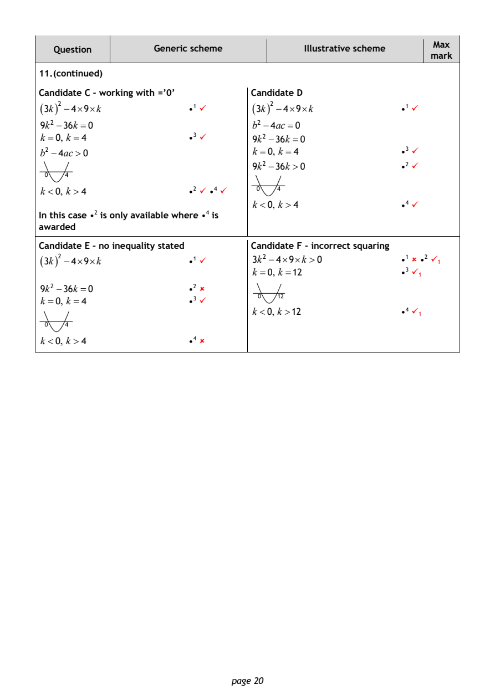
Selectable page text
Max
Question Generic scheme Illustrative scheme
mark
11.(continued)
Candidate C – working with =’0’ Candidate D
(3k)² −4×9×k •1 ✓ (3k)² −4×9×k •1 ✓
9k² −36k =0 b² −4ac=0
k =0, k =4 •3 ✓ 9k² −36k =0
b² −4ac>0 k =0, k =4 •3 ✓
9k² −36k >0 •2 ✓
k <0, k >4 •2 ✓ •4 ✓
k <0, k >4 •4 ✓
In this case •² is only available where •⁴ is
awarded
Candidate E – no inequality stated Candidate F – incorrect squaring
(3k)² −4×9×k •1 ✓ 3k² −4×9×k >0 •1 •2 ✓ 1
k =0, k =12 •3 ✓
1
9k² −36k =0 •2
k =0, k =4 •3 ✓
k <0, k >12 •4 ✓
1
k <0, k >4 •4
page 20PDF page 21
Paper 1, Question 12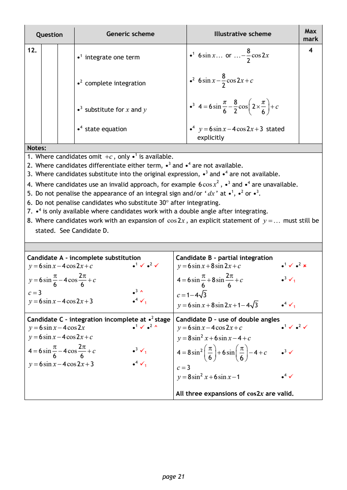
Selectable page text
Max
Question Generic scheme Illustrative scheme
mark
12. 8 4
•1 integrate one term •1 6sinx or …− cos2x
2
8
•2 complete integration
•2 6sinx− cos2x+c
2
π 8 π
•3 substitute for x and y •3 4 =6sin − cos 2× +c
6 2 6
•4 state equation •4 y=6sinx−4cos2x+3 stated
explicitly
Notes:
1. Where candidates omit +c, only •¹ is available.
2. Where candidates differentiate either term, •³ and •⁴ are not available.
3. Where candidates substitute into the original expression, •³ and •⁴ are not available.
4. Where candidates use an invalid approach, for example 6cosx², •³ and •⁴ are unavailable.
5. Do not penalise the appearance of an integral sign and/or ‘dx’ at •¹, •2 or •³.
6. Do not penalise candidates who substitute 30° after integrating.
7. •⁴ is only available where candidates work with a double angle after integrating.
8. Where candidates work with an expansion of cos2x, an explicit statement of y =… must still be
stated. See Candidate D.
Candidate A - incomplete substitution Candidate B - partial integration
y=6sinx−4cos2x+c •1 ✓ •2 ✓ y=6sinx+8sin2x+c •1 ✓ •2
π 2π π 2π
y =6sin −4cos +c 4=6sin +8sin +c •3 ✓
1
6 6 6 6
c=3 •3 ^ c=1−4 3
y=6sinx−4cos2x+3 •4 ✓
1 y =6sinx+8sin2x+1−4 3 •4 ✓
1
Candidate C – integration incomplete at •² stage Candidate D – use of double angles
y =6sinx−4cos2x •1 ✓ •2 ^ y=6sinx−4cos2x+c •1 ✓ •2 ✓
y=6sinx−4cos2x+c y=8sin² x+6sinx−4+c
π 2π π π
4 =6sin −4cos +c •3 ✓ 1 4 =8sin² +6sin −4+c •3 ✓
6 6 6 6
y=6sinx−4cos2x+3 •4 ✓
1 c=3
y=8sin² x+6sinx−1 •4 ✓
All three expansions of cos2x are valid.
page 21PDF page 22
Paper 1, Question 13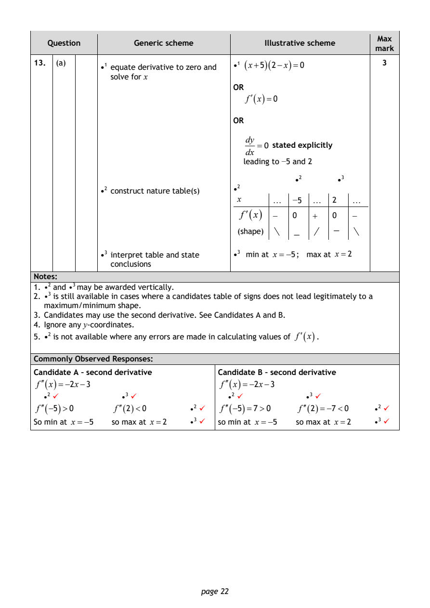
Selectable page text
Max
Question Generic scheme Illustrative scheme
mark
13. (a) •1 equate derivative to zero and •1 (x+5)(2−x)=0 3
solve for x
OR
f′(x)=0
OR
dy
=0 stated explicitly
dx
leading to −5 and 2
•2 •3
•2 construct nature table(s) •2
x … −5 … 2 …
f ′(x) − 0 + 0 −
(shape)
•3 interpret table and state •3 min at x=−5; max at x =2
conclusions
Notes:
1. •² and •³ may be awarded vertically.
2. •³ is still available in cases where a candidates table of signs does not lead legitimately to a
maximum/minimum shape.
3. Candidates may use the second derivative. See Candidates A and B.
4. Ignore any y-coordinates.
5. •² is not available where any errors are made in calculating values of
f′(x)
.
Commonly Observed Responses:
Candidate A – second derivative Candidate B – second derivative
f′′(x)=−2x−3 f′′(x)=−2x−3
•2 ✓ •3 ✓ •2 ✓ •3 ✓
f′′(−5)>0 f′′(2)<0 •2 ✓ f′′(−5)=7 >0 f′′(2)=−7<0 •2 ✓
So min at x=−5 so max at x =2 •3 ✓ so min at x=−5 so max at x =2 •3 ✓
page 22PDF page 23
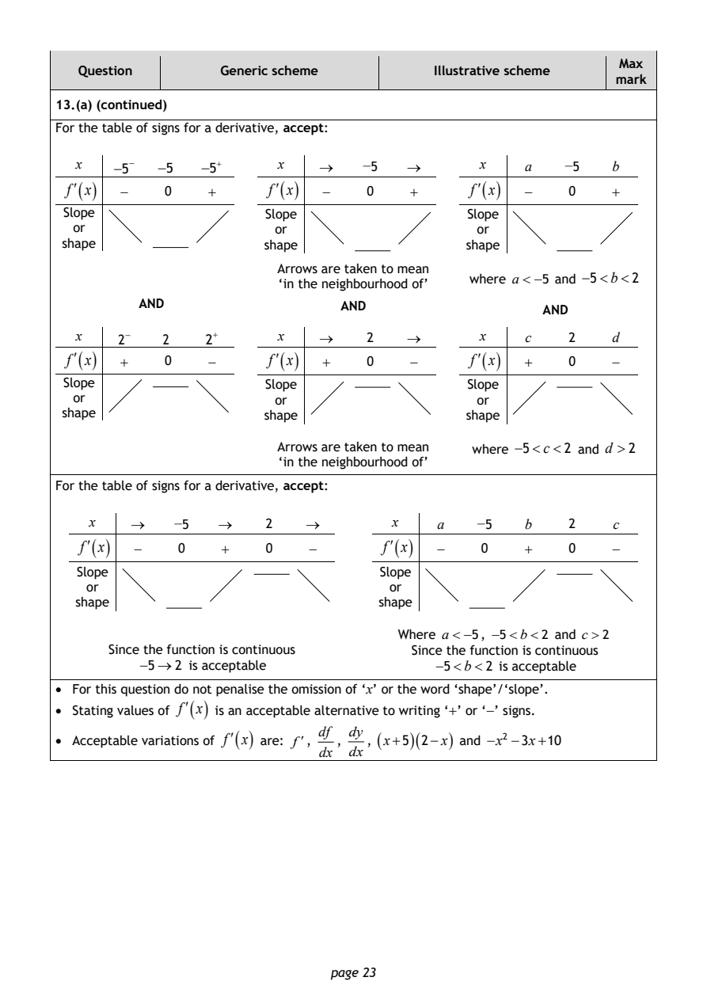
Selectable page text
Max
Question Generic scheme Illustrative scheme
mark
13.(a) (continued)
For the table of signs for a derivative, accept:
x −5⁻ −5 −5⁺ x → −5 → x a −5 b
f′(x)
− 0 +
f′(x)
− 0 +
f′(x)
− 0 +
Slope Slope Slope
or or or
shape shape shape
Arrows are taken to mean
where a<−5 and −5<b<2
‘in the neighbourhood of’
AND AND
AND
x 2⁻ 2 2⁺ x → 2 → x c 2 d
f′(x)
+ 0 −
f′(x)
+ 0 −
f′(x)
+ 0 −
Slope Slope Slope
or or or
shape shape shape
Arrows are taken to mean where −5<c<2 and d >2
‘in the neighbourhood of’
For the table of signs for a derivative, accept:
x → −5 → 2 → x a −5 b 2 c
f′(x)
− 0 + 0 −
f′(x)
− 0 + 0 −
Slope Slope
or or
shape shape
Where a<−5, −5<b<2 and c>2
Since the function is continuous Since the function is continuous
−5→2 is acceptable −5<b<2 is acceptable
• For this question do not penalise the omission of ‘x’ or the word ‘shape’/‘slope’.
• Stating values of
f′(x)
is an acceptable alternative to writing ‘+’ or ‘−’ signs.
• Acceptable variations of f′(x) are: f′, df , dy , (x+5)(2−x) and −x² −3x+10
dx dx
page 23PDF page 24
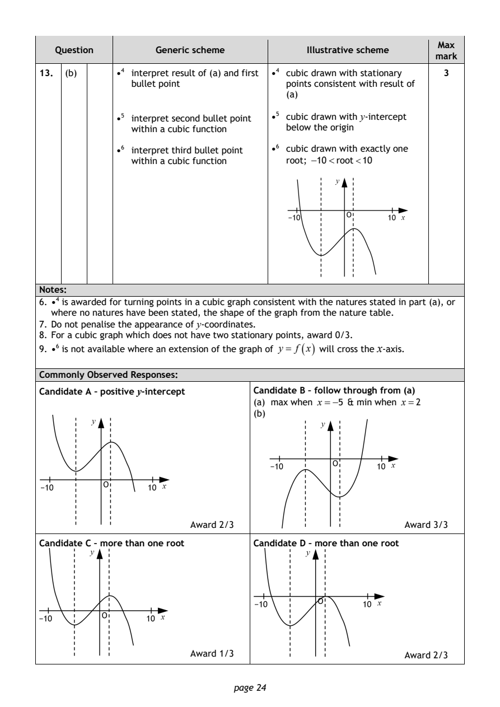
Selectable page text
Max
Question Generic scheme Illustrative scheme
mark
13. (b) •4 interpret result of (a) and first •4 cubic drawn with stationary 3
bullet point points consistent with result of
(a)
•5 interpret second bullet point •5 cubic drawn with y-intercept
within a cubic function below the origin
•6 interpret third bullet point •6 cubic drawn with exactly one
within a cubic function root; −10<root<10
Notes:
6. •⁴ is awarded for turning points in a cubic graph consistent with the natures stated in part (a), or
where no natures have been stated, the shape of the graph from the nature table.
7. Do not penalise the appearance of y-coordinates.
8. For a cubic graph which does not have two stationary points, award 0/3.
9. •⁶ is not available where an extension of the graph of y = f (x) will cross the x-axis.
Commonly Observed Responses:
Candidate A – positive y-intercept Candidate B – follow through from (a)
(a) max when x=−5 & min when x =2
(b)
Award 2/3 Award 3/3
Candidate C – more than one root Candidate D – more than one root
Award 1/3 Award 2/3
page 24PDF page 25
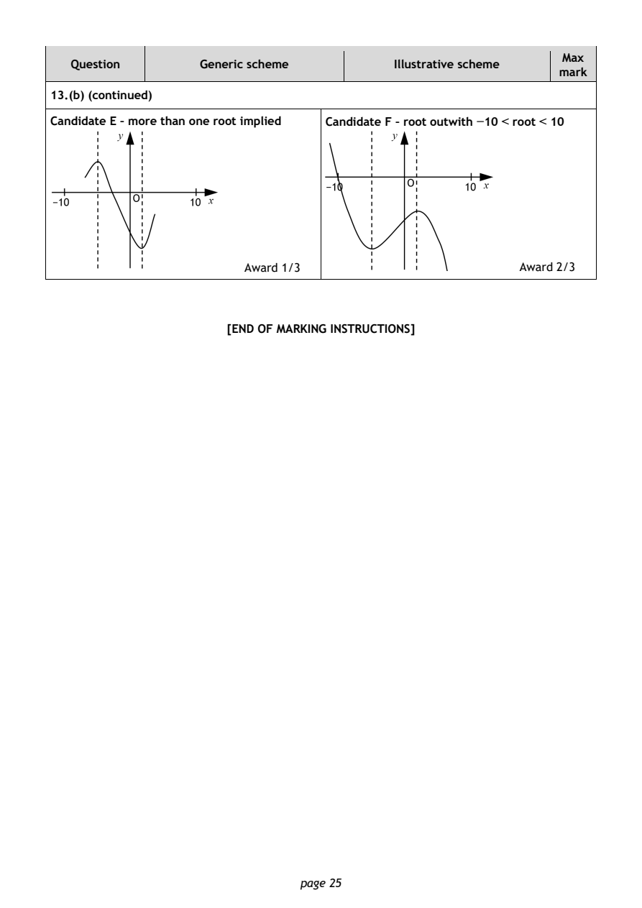
Selectable page text
Max
Question Generic scheme Illustrative scheme
mark
13.(b) (continued)
Candidate E – more than one root implied Candidate F – root outwith −10 < root < 10
Award 1/3 Award 2/3
[END OF MARKING INSTRUCTIONS]
page 25